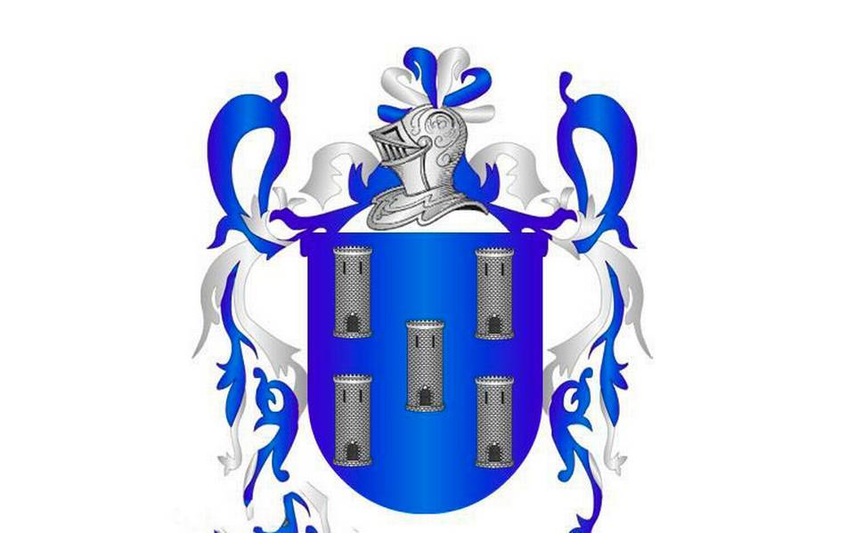

Hay familias de este apellido que se consideran originarias de la Casa Real de Navarra.
El escudo de armas del apellido Torres está compuesto en azul, con cinco torres de plata, dispuestas en aspa.
El apellido Torres es de origen toponímico, es decir son nombres propios que se adoptan según los lugares
geográficos, es un apellido muy común en España y América Latina. Procedente del sustantivo ‘torre’, el
apellido es muy usado en español, gallego catalán y portugués.
Fijado antes del siglo XIV, respecto al apellido Torres es difícil para los historiadores fijar el lugar exacto
de su procedencia.
Hay familias de este apellido que se consideran originarias de la Casa Real de Navarra. Una de ellas tiene por
su progenitor a Sancho Fortún, y otra se cree descendiente del Infante don Fernando, Rey de Castilla.